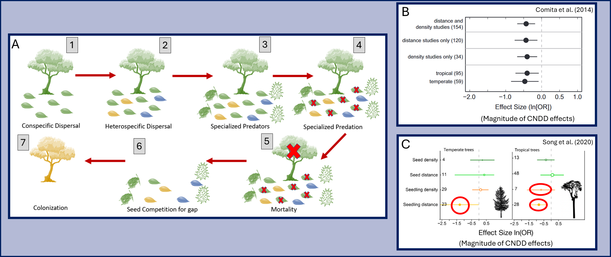
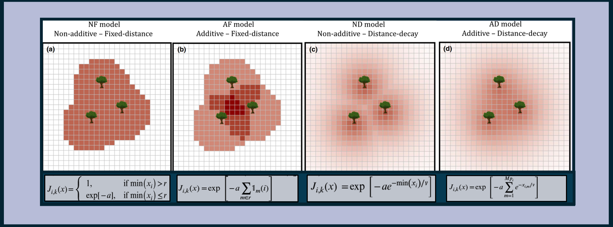

🦠 Natural enemies and plant diversity 🌱
Historically, work in community ecology focused on species interactions that take place within a defined environment that exists independent of the species – in other words, species have been figuratively treated like actors upon an environmental stage that preexists them. This view is no longer substantiated: recent decades have seen an explosion of research into how organisms shape their environments.
One such process involves plants and their natural enemies (e.g. insects, fungi and pathogens). Empirical evidence shows that specialized pathogens and pests are attracted to areas of high host plant density, which may strongly affect plant growth and survival. This phenomonon, in part, motivates agriculturalists to perform crop rotations, which can keep natural enemies (soil pathogens) at bay. While specialized pests and pathogens are often a nuisance and threat in the anthropocentric world of agriculture, they may have profound and fascinating implications for species interactions in the natural world.
In particular, observations show that specialized natural enemies reduce the survival of juvenile plants (e.g. seedlings) when they are near conspecific adult trees. These phenomena are often referred to as ``Janzen-Connell effects’’ (JCEs), named after the scientists who proposed the idea. JCEs are thought to promote coexistence by generating so-called negative frequency dependence: as a species becomes more common, its offspring experience JCEs in a larger proportion of the environment. This reduces the success of common species relative to rare species, which facilitates species coexistence.
 A visualization of JCEs and empirical evidence. (A) shows how JCEs occur. [1] Consider a focal species, the green tree. It locally disperses some of its offspring. [2] Heterospecific species disperse some of their offspring to the area as well. Color indicates species. [3] Janzen Connell Effects refer to the observation that either the presence of the adult tree, the relatively high density of its nearby offspring, or a combination of these factors attracts specialized natural enemies such as insect herbivores or fugal pathogens. [4] The presence of these specialized natural enemies reduce the survival of our focal species’ nearby offspring (most often during the seed-to-seedling transition). [5] The key idea is that when the adult occupying the patch dies and [6] the remaining individuals compete for the gap, the relatively high mortality our focal green species experienced makes it [7] less likely than the other species to colonize the patch (at least relative to when this processes doesn’t occur). (B) and (C) show empirical evidence from Comita et al. 2014 and Song et al. 2021 that seedling mortality tends to increase in areas of high density and/or near conspecific adults.
However, the efficacy of this mechanism remains contested on theoretical grounds. Much of my PhD work focused on elucidating how and when JCEs are theoretically expected to maintain species richness. For example, JCEs are expected to decrease the survival of conspecific offspring near adults. How exactly does survival change with conspecific adult distance and density? The below figure shows four different assumptions common in theoretical models and statistical fits of JCEs (in which redder shading indicates stronger JCEs / higher mortality). As it turns out, the ability of JCEs to maintain species richness strongly depends on which distance and density dependent functional forms are assumed. See my published work for more details on this project.
 Visualizations of different JCE function forms with respect to adult conspecific density and distance. Link to article published in Ecology Letters
More recently, I have investigated how the simultaneous occurance of JCEs and abiotic habitat hetergeneity affect species richness and how JCEs decay with space and time with a group of excellent collaborators.
I am currently collaborating with Dr. Annette Ostling and Dr. Brian Sedio. We are integrating analyses of secondary metabolite data from leaves (which correlate with pathogen resistance) with theoretical modeling to examine how the network of pathogen resistance similarity/dissimilarity between tree species shapes species richness in forest communities throughout the world. Hopefully, we will have exciting products to share with you soon!